Час. Рад са сликама – обрада дигиталних слика¶
- На овом часу ћемо говорити о:
селекцији дела слике;
промени нивоа обојености, осветљености и контраста;
филтерима;
основним геометријским трансформацијама слике;
аутоматској обради већег броја дигиталних слика.
Да бисмо уредили одређени део слике у програму Gimp 2 постоји више алатки помоћу којих то можемо да урадимо.
Алатке за означавање (селектовање) жељеног дела слике налазе се у Toolbox (1), а видљиве су и у оквиру менија Tools → Selection Tools (2).

Део слике селектујемо употребом алатки за правоугаону 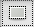, елипсоидну 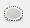, и селекцију слободним избором или издвајањем пиксела који имају сличне особине (суседне области сличне боје 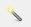, области исте боје на целој слици ). Кликом на једну од наведених алатки, отвара се простор у коме је могуће подесити њена својства.
{kind=link}
{kind=link}
{kind=link}
{kind=link}
Опис поступка за означавање делова слике можете погледати на доњем видеу:
Видео
Најважнија својства алатке за избор правоугаоне селекције су:
Mode – преклапање селекције (Прво дугме активира режим у коме се креирањем нове селекције уклања претходна, док друго дугме активира режим у коме се креирањем нове селекције задржава претходна);
Feather edges – фини прелаз између селектованог и неселектованог дела слике;
3. Rounded corners - Заобљене ивице;
Expand from Center - Рашири из средишта.

Селекцију у облику правоугаоника исцртавамо тако што одаберемо алатку Rectangle Select Tool и, држећи притиснут леви тастер миша, развучемо правоугаоник.
Да бисмо извршили квадратну селекцију држимо притиснут тастер Shift или подешавамо својства 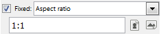 којим се задржава однос ширине и висине на 1:1 што значи да ће нам бити иста ширина и дужина селекције.
{kind=link}
Опис поступка за селекцију у облику правоугаоника и квадрата можете погледати на доњем видеу:
Видео
Овалну селекцију исцртавамо тако што одаберемо алатку Ellipse Select Tool и, држећи притиснут леви тастер миша, развучемо овални облик. Круг исцртавамо држећи притиснут тастер Shift или подешавањем својства задржавања односа ширине и висине 1:1.
Опис поступка за селекцију у облику елипсе и круга можете погледати на доњем видеу:
Видео
Селекцију неправилног облика исртавамо коришћењем алатке Free Select Tool (ласо). Селекцију исцртавамо тако што курсор поставимо на део слике који желимо да селектујемо. Држимо притиснут леви тастер миша и исцртавамо жељени облик. Да би облик био затворен, процес селектовања морамо да завршимо у тачки из које смо га започели.
Опис поступка за селекцију неправилног облика можете погледати на доњем видеу:
Видео
Да бисмо селектовали суседну област или објекат сличне боје користимо алатку Fuzzy Select Tool . Када кликнемо на неку област или објекат, пиксели који имају сличну вредност боје биће такође селектовани.
Да бисмо селектовали све области или предмете исте боје можемо да користимо алатку Select by Color Tool 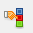. Када кликнемо на неку област или објекат, сви пиксели који имају исте вредност боје биће селектовани.
{kind=link}
Опис поступка за селекцију објеката сличне или исте боје можете погледати на доњем видеу:
Видео
Промена нивоа обојености, осветљености и контраста¶
У програмима за обраду слике могуће је да извршимо додатне корекције на слици као што су промене нивоа осветљености, контраста или обојености.
У оквиру менија Colors можемо да подесимо:
Color Balance - равнотеже боја (подешавање тамних или светлијих делова слике);
Hue-Saturation - нијанси - засићеност;
Colorize - обојености;
Brightness-Contrast - осветљење, односно контраст.
{kind=link}
Кликом на Color Balance отвара се помоћни мени у коме можемо да променимо тамне (Shadows), средње (Midtones) или светле делове (Highlights) слике, те да, померањем клизача, подесимо нивое боја (Cyan, Magenta, Yellow).
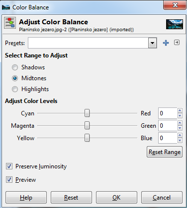{kind=link}
Кликом на опцију Brightness-Contrast отвара се прозор у коме померањем клизача можемо подесити осветљеност Brightness и/или контраст Contrast.
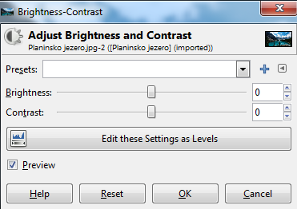{kind=link}
Опис поступка за промену обојености, осветљења и контраста можете погледати на доњем видеу:
Видео
Филтери¶
Филтери користимо за постизање различитих ефеката на слици као што је изоштравање или замућивање фотографије. Они се могу применити на слоју или селекцији.
Филтерима приступамо кроз мени Filters.
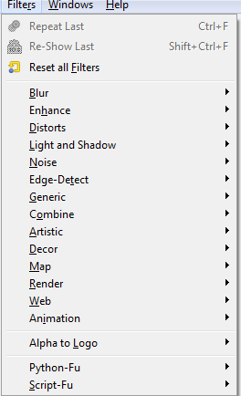{kind=link}
Најчешће се користе следећи филтери:
- Blur – скуп филтера којим се замућује цела или део слике. - Enhance – скуп филтера помоћу кога се врши изоштравање слике, отклањање мрља, црвенила очију… - Distorts – скуп филтера са ефектима мозаика, ветра, таласа,… - Artistic – скуп филтера помоћу којих се ствара уметничке ефекте као што је изглед уља на платну, витража…
Када кликнемо на одабрани филтер отвара се помоћни прозор у којем можемо да видимо како ће изгледати слика након примене филтера, као и да изменимо додатне параметре како би постигли жељени резултат. Притиском на тастер OK потврђујемо примену одабраног филтера.
Опис поступка за примену филтера можете погледати на доњем видеу:
Видео
Основне геометријске трансформације слике¶
У програму Gimp 2 постоји више алатки којима можемо да извршимо трансформацију слике као што је ротирање, обртање или искошавање слике. Овим алаткама приступамо у Toolbox или кроз мени Tools → Transform Tools.

Слику или делове слике можемо да трансформишемо тако што је:
ротирамо кликом на алатку 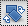;
искосимо кликом на алатку
 ;
;променимо перспективу кликом на алатку 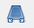;
{kind=link}
{kind=link}
{kind=link}
{kind=link}
Кликом на једну од горе наведених алатки, отвара се простор у коме је могуће подесити њихова својства.
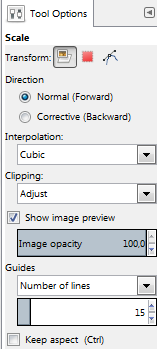{kind=link}
Најважнија својства су:
- Transform – избор слоја или селекције на којој ћемо применити трансформацију; - Interpolation – начин на који ће пиксели који недостају на трансформисаној слици бити допуњени; - Show image preview – начин на који ће се промене, током трансформације приказивати у прозору слике.
Поред горе наведених својстава, избором неке од алатки за трансформацију слике, могу се приказати и друга својства као што је Flip Type - врста/тип преокретања који може да буде хоризонтални (Horizontal) или вертикални (Vertical).
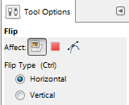{kind=link}
Ротација¶
Често се дешава да слику коју сте преузели са интернета или сте је направили камером неког дигиталног уређаја буде погрешно оријентисана. У програму за обраду слике постоји алатка којом је могуће ротирати слику и поставити је онако како нам одоговара. За то ћемо користити алатку Rotate Tool.
Кликом на активни слој или селектовани део слике појавиће се прозор где подешавамо:
угао ротације (Angle) померањем клизача или уношењем бројевне вредност и
центар ротације.
{kind=link}
Избор потврђујемо кликом на дугме Rotate. Поред тога, слику можемо да ротирамо и тако што кликнемо на слој и држимо притиснут леви тастер миша док га померамо у смеру жељене ротације.
Опис поступка за ротирање слике можете погледати на доњем видеу:
Видео
Искошавање¶
Да бисмо искосили слику по хоризонтали или вертикали можемо користити алатку Shear Tool. Кликом на дату алатку отвара се прозор у коме се вредности уносе кликом на стрелице или конкретном уносом бројчане вредности. Избор потврђујемо кликом на дугме Shear.
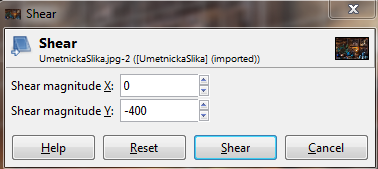{kind=link}
Опис поступка за искошавање слике можете погледати на доњем видеу:
Видео
Преокретање¶
Слику или део слике можемо да преокренемо по хоризонтали или вертикали помоћу алатке FlipTool.
Опис поступка за преокретање слике можете погледати на доњем видеу:
Видео
Аутоматска обрада већег броја дигиталних слика¶
Ако желимо да у исто време променимо име или величину свих слика које се налазе у фасцикли то је могуће у програму за обраду слике коришћењем програмских додатака. Један од таквих додатака је dbp.exe који омогућава аутоматску обраду (промена имена, величине,…) више дигиталних слика.
Додатак можемо преузети са овог линка. Да би инсталирали додатак потребно је да га ископирамо у фасиклу plug-ins програма Gimp 2. Место фасцикле plug-ins зависи од тога где је на твом рачунару инсталиран програм Gimp 2.

Након покретања програма Gimp 2, из менија Filters можемо да покренемо додатак Batch Proces.

Отвара се прозор у оквиру кога кликом на Аdd Files додамо жељене слике и одабирамо акцију коју желимо на њих да применимо.
Опис поступка за инсталацију додатка и његову примену можете погледати на доњем видеу:
Видео
- Шта смо научили?
да дигиталну слику можемо додатно да уређујемо;
да инсталацијом додатака унапређујемо могућности програма Gimp 2 (нпр., примењујемо операције на више слика одједном).